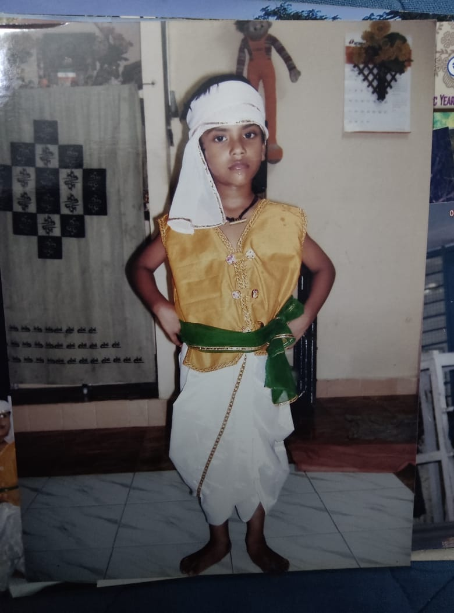
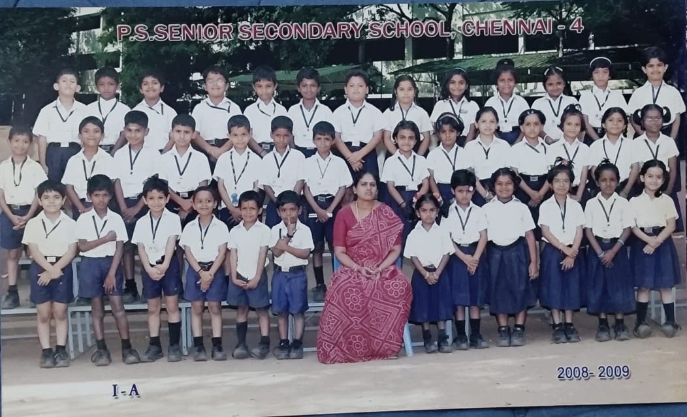
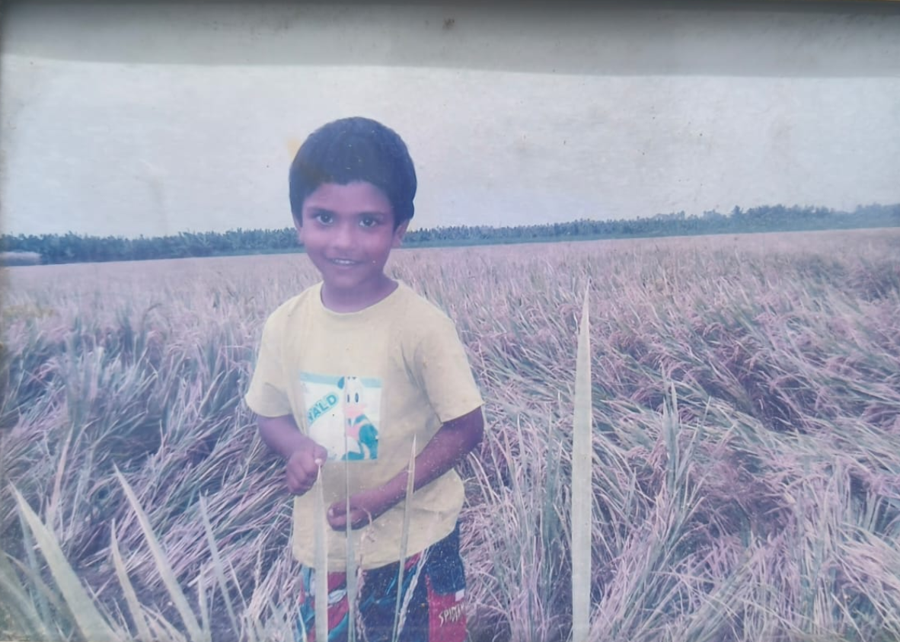
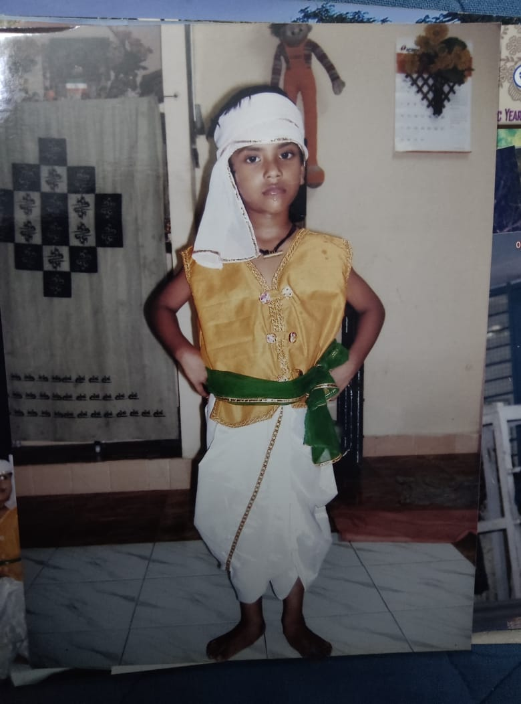
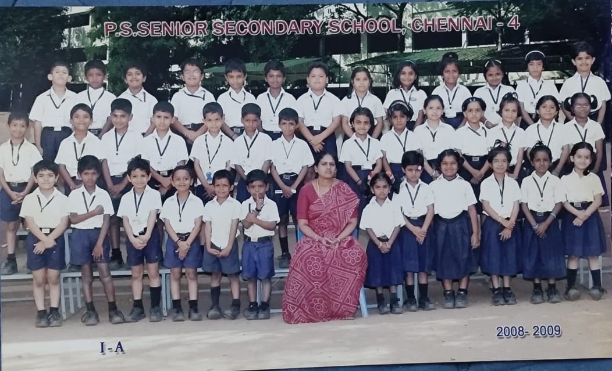
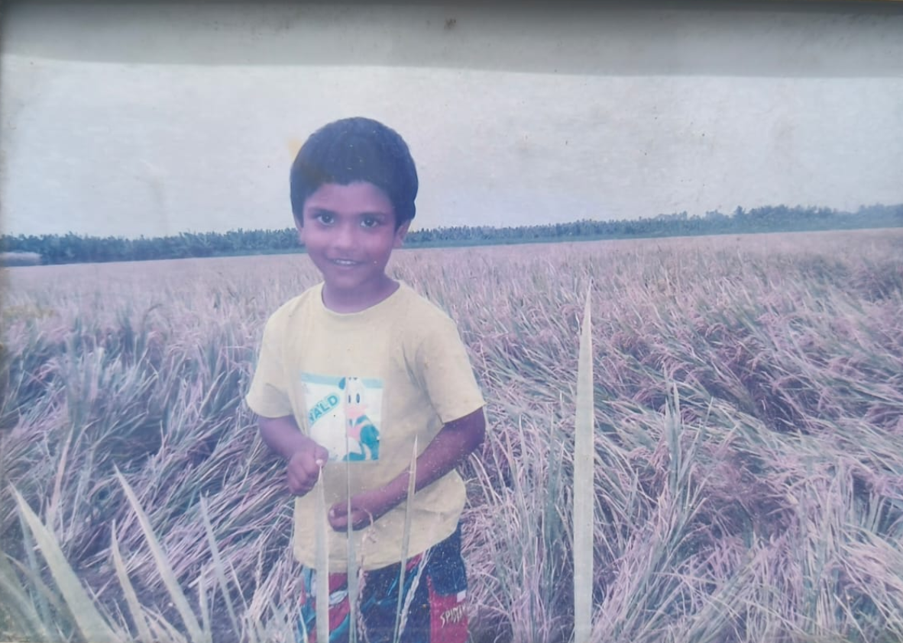
 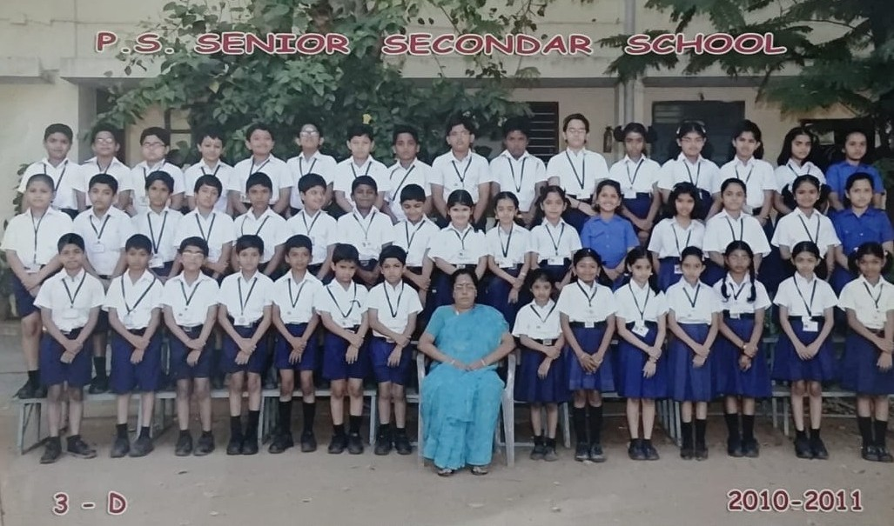
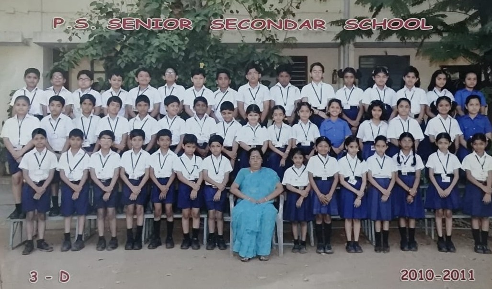

 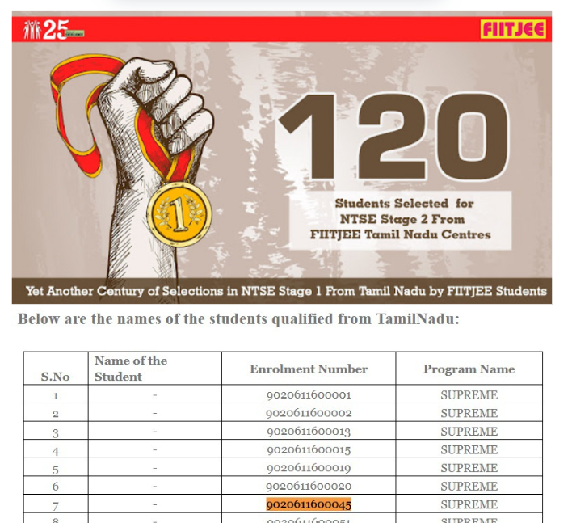
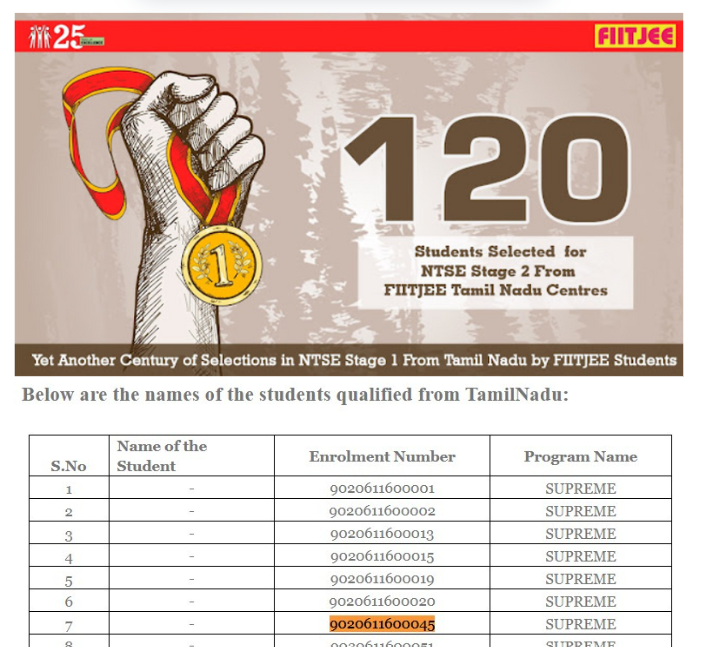
 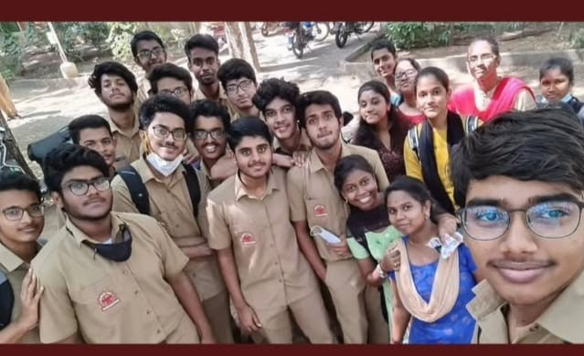
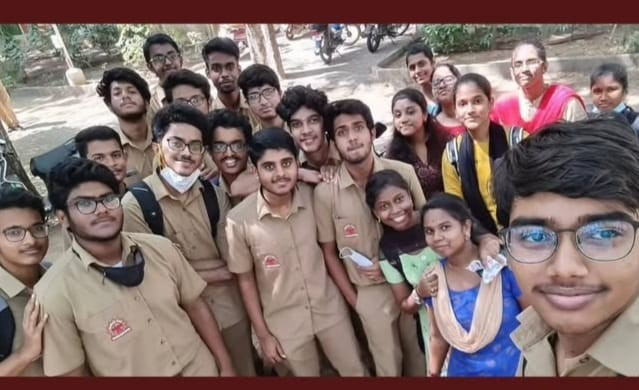
 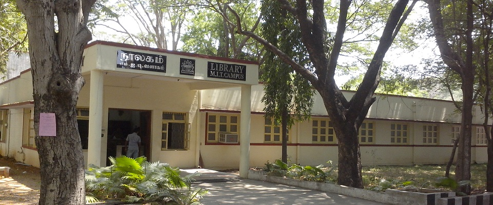
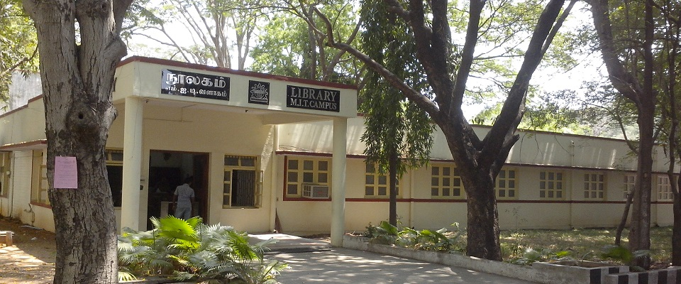


Ramesh Marudhanayagam
The No.1 hero of my life, my dad. From being the son of a farmer to a professor at an esteemed institution, he crossed rough terrain all by himself. He inspires me every day and is the reason I am who I am.
Kobe Bryant
The Mamba mentality. Beyond his achievements in basketball, he was a living example that hard work never fails. One of my favorite quotes of his is "Rest in the end, not in the middle."
M S Dhoni
An idol who has inspired the world. Known for his legacy in Indian cricket. From being a 9-year-old watching the 2011 World Cup final to a 17-year-old crying after a run-out in the 2019 World Cup, he is an emotion.